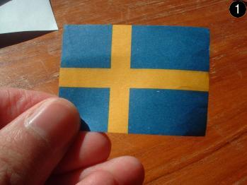

| Start | Argument | Historia | Bildspel | Lagstiftning |
| Historia |
1967 ställde konstnären Carl Johan De Geer ut en affisch på galleri Karlsson föreställande en brinnande svensk flagga där ordet "kuken" stod att läsa i flaggans gula kors. Vidare kunde man läsa följande uppmaningar på affischen:
Skända flaggan
Vägra vapen
Svik fosterlandet
Var onationell
Affischen kan beskådas här.
Polisen gjorde husrannsakan och beslagtog alla affischer och De Geer åtalades. I den påföljande rättegången dömdes De Geer till 75 dagsböter för uppvigling och skymfande av rikssymbol. Affischerna förstördes för att förhindra fortsatt brottslig verksamhet.
Att så som Carl Johan De Geer sticka ut hakan i en tid när det utgjorde ett lagbrott att skända fanan (lagen om skymfande av rikssymbol finns inte längre) är en bragd värdig en hjälte. Man bör på ett bättre sätt än idag påminna om De Geers storartade handling.
Nedanstående serie bilder är ett humoristiskt sätt att visa på hur man kan skända den svenska flaggan. Bilderna är inspirerade av Carl Johan De Geers affisch "Skända fanan". Det kan förhoppningsvis fungera som inspirationskälla för mer uppseendeväckande aktioner runt om i landet.
|  | |
| Start | Argument | Historia | Bildspel | Lagstiftning |
{kind=link}